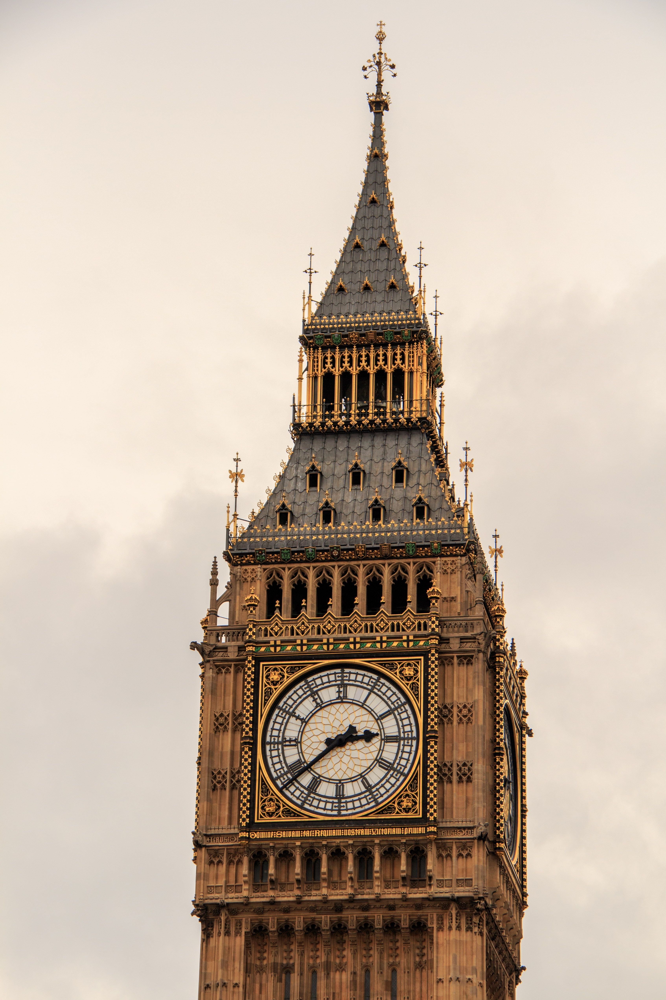
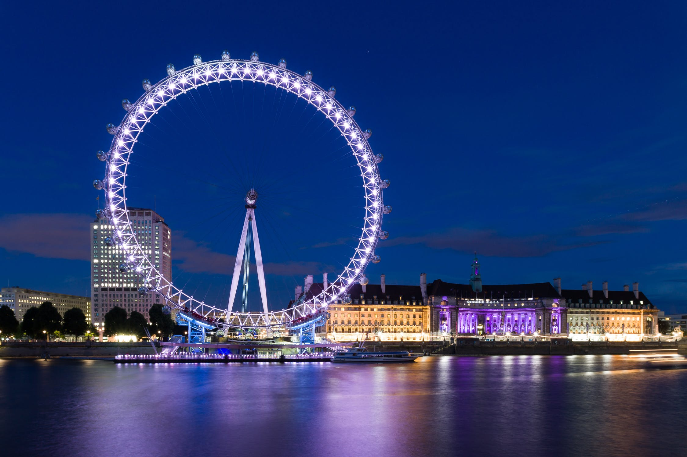

Według mnie podróżą w najpiękniejsze miejsce byłaby podróż do Londynu. Londyn to nadzwyczajne, z niczym nieporównywalne miejsce. O jego pozycji na naszej planecie każdy wie - jest jednym z niewielu miast, które mogłoby kandydować do rangi stolicy Ziemi.
| Miejsce |
Zdjęcie |
Opis |
| Big Ben |
 |
Big Ben to nazwa nadana wielkiemu dzwonowi zegara w wieży Elżbiety, która znajduje się w Westminiter nad rzeką Tamizą. |
| London Eye |
 |
To ogromny diabelski młyn postawiony w 2000 roku. Wywozi ludzi na wysokość 150 metrów, a pełny obrót trwa 30 minut. |
| Buckingham Palace |
 |
Wzniesiony w XVIII w. najsłynniejszy pałac królewski na świecie. Jest stałą siedzibą królowej brytyjskiej i sercem monarchii. |
| Tower of London |
 |
Budowę tego zamku rozpoczął Wilhelm Zdobywca. W dawnych wiekach pełnił on różne funkcje: twierdzy, siedziby królewskiej, zbrojowni, mennicy, i więzienia. Dzisiaj można tam zobaczyć klejnoty koronne. |
| St. Paul's Cathedral |
 |
Katedrę tę wybudowano w 1711 roku, autorem jej projektu był Christopher Wren. Pod posadzką świątyni znajduje się największa w Europie krypta. |
| Westminster Abbey |
 |
Najważniejsza świątynia wyznania anglikańskiego. Koronowali się tu niemal wszyscy władcy Anglii. Również tu spoczywają angielscy królowie od Henryka III do Jeżego II. |